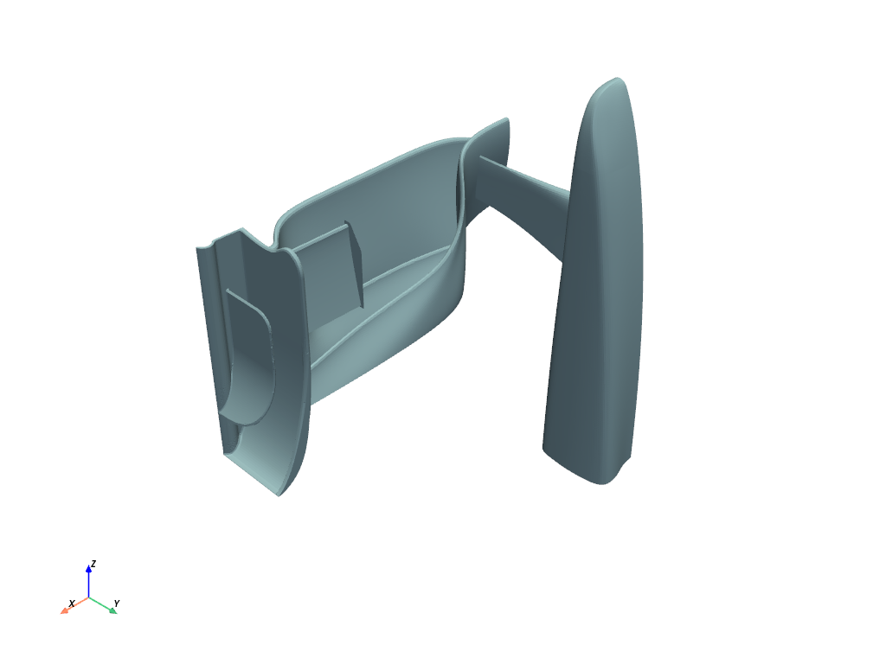
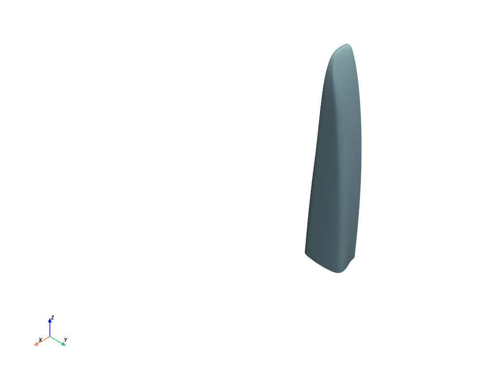
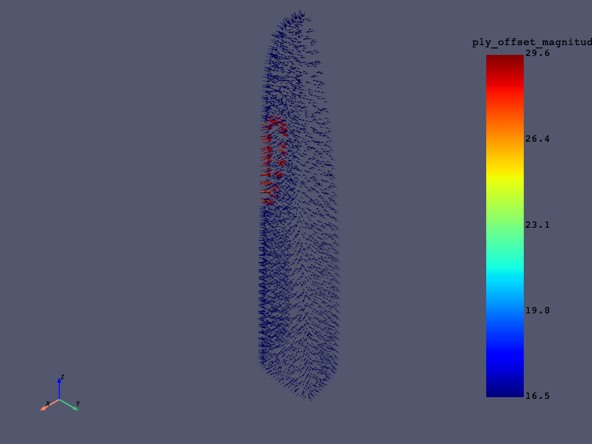
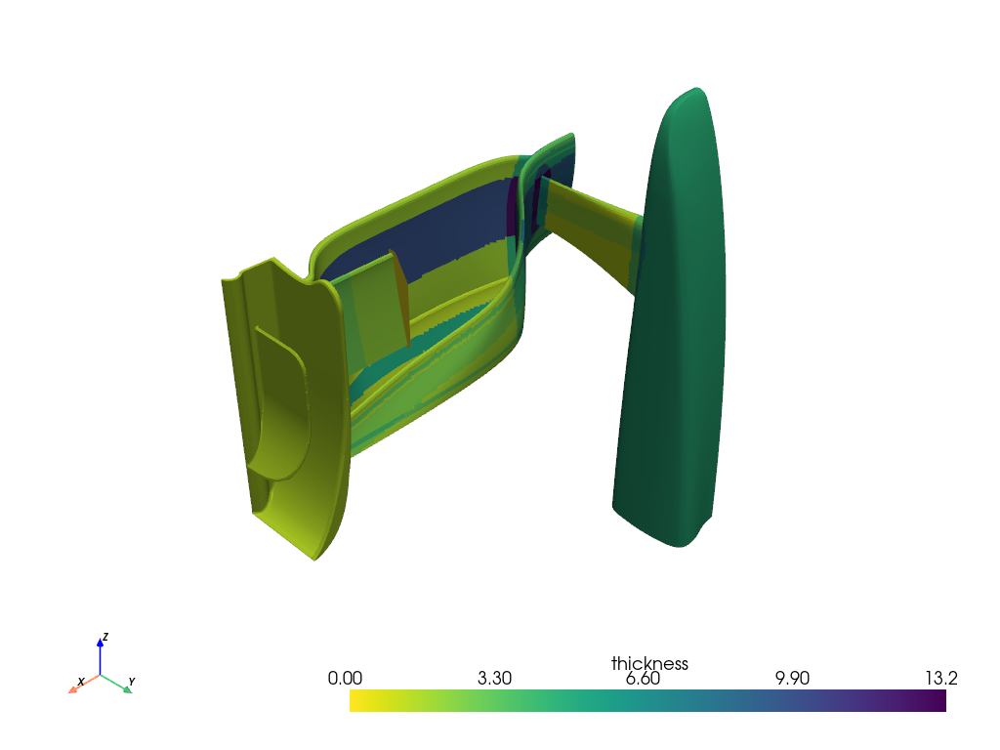
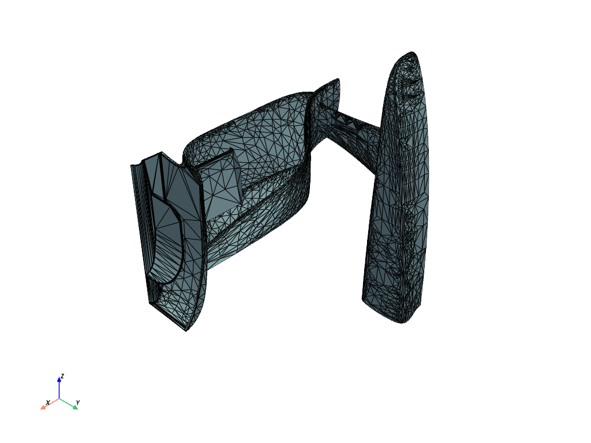

Visualizing the model#
For this how-to guide, we will use an example model of a race car front wing.
>>> import tempfile
>>> import pathlib
>>> import ansys.acp.core as pyacp
>>> from ansys.acp.core import example_helpers
>>> acp = pyacp.launch_acp()
>>> tempdir = tempfile.TemporaryDirectory()
>>> input_file = example_helpers.get_example_file(
... example_helpers.ExampleKeys.RACE_CAR_NOSE_ACPH5, pathlib.Path(tempdir.name)
... )
>>> path = acp.upload_file(input_file)
>>> model = acp.import_model(path=path)
>>> input_file_geometry = example_helpers.get_example_file(
... example_helpers.ExampleKeys.RACE_CAR_NOSE_STEP, pathlib.Path(tempdir.name)
... )
>>> path_geometry = acp.upload_file(input_file_geometry)
>>> model.create_cad_geometry(name="nose_geometry", external_path=path_geometry)
>>> model.update()
Showing the mesh#
The mesh data can be accessed using the Model.mesh attribute. This attribute is an instance of the MeshData class, and can be converted to a PyVista mesh using the MeshData.to_pyvista() method.
>>> model.mesh.to_pyvista().plot()

Showing the directions#
To show the directions (for example normals, fiber directions, orientations, etc.) of the model, we can use the get_directions_plotter() helper function. This function takes the model, the components to visualize, and some optional parameters.
The following example shows the orientation and fiber direction of a modeling ply.
>>> modeling_ply = model.modeling_groups['nose'].modeling_plies['mp.nose.4']
>>> elemental_data = modeling_ply.elemental_data
>>> directions_plotter = pyacp.get_directions_plotter(
... model=model,
... components=[
... elemental_data.orientation,
... elemental_data.fiber_direction
... ],
... length_factor=10.,
... culling_factor=10,
... )
>>> directions_plotter.show()

The color scheme used in this plot for the various components matches the ACP GUI.
Showing mesh data#
In general, the mesh data relating to a specific ACP object can be accessed using the elemental_data and nodal_data attributes. These attributes represent either scalar or vector data.
Scalar data#
Scalar data can be converted to a PyVista mesh using the get_pyvista_mesh method. The base model mesh needs to be passed to this method.
For example, we can plot the total thickness of the model using the following code:
>>> thickness_data = model.elemental_data.thickness
>>> pyvista_mesh = thickness_data.get_pyvista_mesh(mesh=model.mesh)
>>> pyvista_mesh.plot()

Vector data#
Vector data can be visualized using the get_directions_plotter() function shown in the preceding section Showing the directions. If you need more fine-grained control over the visualization, you can use the method shown in this section instead.
Vector data can be converted to PyVista glyphs using the get_pyvista_glyphs method. Again, the base model mesh needs to be passed to this method.
We can also choose a scaling factor to change the size of the vector glyphs, and a culling factor to reduce the number of glyphs plotted.
>>> production_ply = model.modeling_groups['nose'].modeling_plies['mp.nose.6'].production_plies['ProductionPly.20']
>>> ply_offset = production_ply.nodal_data.ply_offset
>>> ply_offset.get_pyvista_glyphs(mesh=model.mesh, scaling_factor=6., culling_factor=5).plot()

When plotting vector data in this way, the base mesh is not shown. To additionally show the mesh, we can combine the mesh and the glyphs using a PyVista plotter.
>>> import pyvista
>>> plotter = pyvista.Plotter()
>>> _ = plotter.add_mesh(model.mesh.to_pyvista(), color="white", opacity=0.5)
>>> _ = plotter.add_mesh(
... ply_offset.get_pyvista_glyphs(mesh=model.mesh, scaling_factor=6., culling_factor=5),
... color="blue"
... )
>>> plotter.show()

Note
The preceding plot may not render correctly as a static scene. See the interactive scene instead.
Showing geometries#
CAD Geometries can be visualized using their visualization_mesh attribute. This attribute contains a tessellated (triangle) mesh representing the geometry.
For plotting, the tessellated mesh has a .to_pyvista method that returns a PyVista PolyData object. To see the triangle nature of the mesh, you can plot the mesh with the show_edges option set to True.
>>> cad_geometry = model.cad_geometries['nose_geometry']
>>> tessellated_mesh = cad_geometry.visualization_mesh
>>> tessellated_mesh.to_pyvista().plot(show_edges=True)
